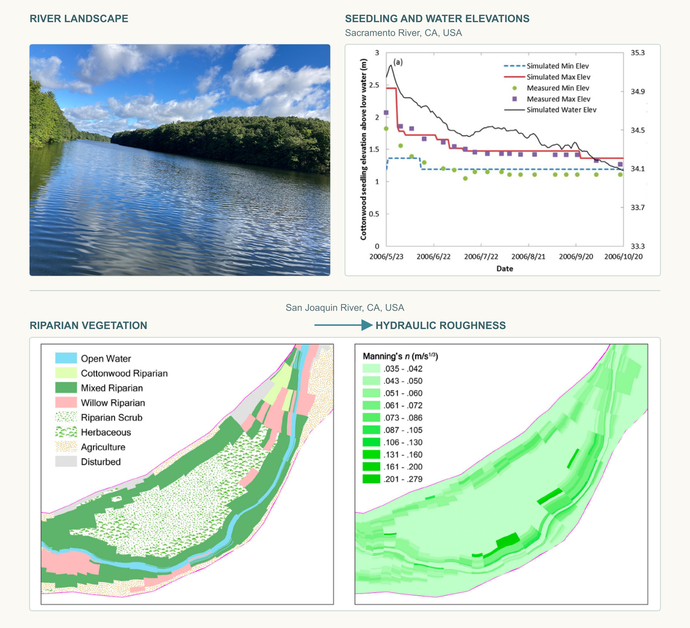

Flow – Riparian Vegetation Interactions
Riparian vegetation is a critical component of river ecosystems. Its life cycle is closely coupled with river flow regimes. Meanwhile, vegetation alters hydraulic resistance and can substantially influence water levels, particularly during floods.
In collaboration with the U.S. Army Engineer Research and Development Center and the U.S. Bureau of Reclamation, we coupled a riparian vegetation model with the widely used one-dimensional hydraulic model HEC-RAS to:
- Evaluate the performance of 11 methods for estimating vegetation-induced hydraulic roughness
- Simulate the two-way interactions between river flow regimes and riparian vegetation dynamics along the Sacramento River.